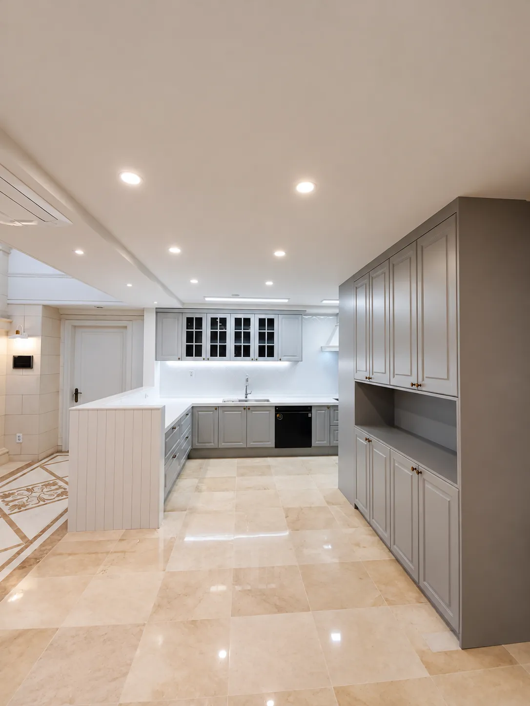
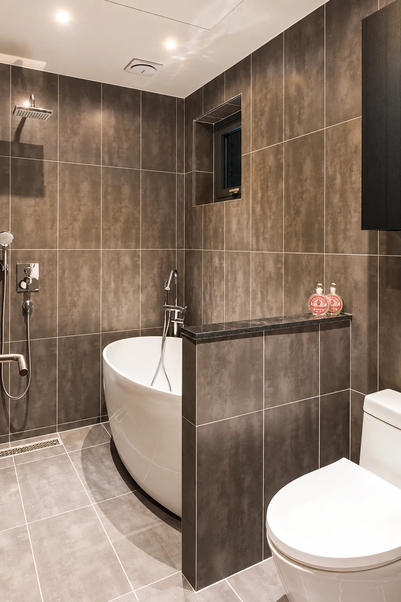

24평·25평 아파트 인테리어
20평대에서는 수납 깊이, 가구 배치, 주방 통로를 먼저 확인하세요. 현관 신발장과 주방 키큰장, 침실 붙박이장의 문이 서로 간섭하지 않는지 도면에 표시합니다. 확장·철거가 필요하면 구조와 공동주택 규정을 먼저 확인합니다.
THEMI / REMODELING GUIDE
20평대부터 40평대까지, 평수보다 중요한 공사 범위와 현장 조건을 확인하세요.
디자인더미는 하남시 덕풍동에 위치한 인테리어 업체입니다. 아래 내용은 전체 리모델링 견적을 준비하는 일반적인 체크 가이드이며 확정 견적이나 시공 실적을 의미하지 않습니다.
견적 상담 신청 ↗
SIZE & SCOPE
20평대에서는 수납 깊이, 가구 배치, 주방 통로를 먼저 확인하세요. 현관 신발장과 주방 키큰장, 침실 붙박이장의 문이 서로 간섭하지 않는지 도면에 표시합니다. 확장·철거가 필요하면 구조와 공동주택 규정을 먼저 확인합니다.
30평대는 주방과 거실의 연결, 가족별 방 사용, 욕실 수와 수납 계획에 따라 견적이 달라집니다. 동일한 평형이라도 창호 교체와 설비 공사를 포함한 견적과 마감 위주의 견적은 직접 비교하기 어렵습니다. 필수 공사와 선택 공사를 분리하세요.
면적이 넓어질수록 바닥·벽·천장 마감 면적뿐 아니라 조명 회로, 냉난방, 가구 길이와 수납 설계가 중요해집니다. 기존 가구의 재사용 여부와 공간별 우선순위를 함께 정리하면 공사 범위를 비교하기 수월합니다.
오래된 아파트는 누수 흔적, 배관·전기 상태, 결로, 창호 기밀성과 바닥 수평 등을 현장 확인해야 합니다. 겉마감만 바꿀지 설비까지 정비할지에 따라 공정과 예산이 달라질 수 있습니다.
주방은 급배수·전기·환기와 가전 배치를, 욕실은 방수·배수·환기와 위생기구를, 거실은 조명·바닥·벽체를, 현관은 수납·중문·동선을 확인합니다. 부분 공사만 의뢰할 경우 실제 수행 가능 여부는 상담에서 확인합니다.
입주일과 이사일, 관리사무소의 공사 가능 시간, 엘리베이터 보양·자재 반입 조건을 확인하세요. 평면도, 현재 사진, 원하는 마감, 반드시 교체할 항목을 준비하면 초기 견적 상담에 도움이 됩니다.
여러 업체의 견적은 같은 범위를 기준으로 비교해야 합니다. 다음 항목의 포함 여부와 별도 비용을 확인하세요.
정확한 금액과 기간은 현장 확인 및 계약 범위에 따라 달라집니다.
PRACTICAL ESTIMATE WORKBOOK
전체 예산은 철거·보양·폐기물, 기본 설비, 마감, 주문 제작 가구, 선택 공사, 부가세 및 계약에서 정한 추가 공사의 합계로 비교합니다. 평당 단가만으로는 창호나 욕실 공사 포함 여부를 알 수 없습니다. 아래 표는 금액표가 아니라 견적 요청 시 사용할 공사 범위 비교표입니다.
| 평형 | 기본 비교 항목 | 추가 확인 항목 |
|---|---|---|
| 20평대 | 철거, 바닥, 벽·천장, 주방, 욕실, 조명 | 수납 가구 길이, 냉장고 배치, 창호 교체 |
| 30평대 | 기본 마감, 주방, 욕실별 공사, 현관, 전기 | 욕실 수, 확장 여부, 급배수 이동, 시스템 에어컨 |
| 40평대 | 공간별 마감, 주방·욕실, 조명 회로, 수납 | 대형 가구 제작, 창호 수량, 냉난방, 자재 반입 |
아파트명·동네 / 전용면적과 공급면적 / 입주 예정일 / 현재 거주 여부 / 전체 공사인지 부분 공사인지 / 창호 교체 여부 / 욕실 개수 / 주방 구조 변경 여부 / 원하는 자재와 예산 상한을 정리하세요. 사진이나 평면도가 있다면 함께 준비하면 좋습니다. 동·호수 등 세부 개인정보는 공개 게시물에 남기지 마세요.
관리사무소에 확인할 보양·승강기 사용 조건, 철거 후 발견되는 배관·누수 문제, 별도 구매 가전과 조명, 폐기물 처리, 추가 공사 승인 절차를 구분하세요. 업체별 견적을 비교할 때 자재 제조사·모델·수량, 포함 및 제외 항목을 같은 기준으로 확인하고, 확정 계약 전 현장 실측을 요청하세요.
HANAM / MISA PORTFOLIO

공개된 거실·주방·수납 사진에서 주방 가구 구성, 거실과 연결되는 동선, 수납 위치를 확인할 수 있습니다. 같은 단지에서도 기존 구조와 원하는 공사 범위에 따라 견적은 달라집니다.
제일풍경채 상세 시공 사진 보기 ↗
주방·욕실·복도 사진을 통해 공간별 마감과 동선에 관한 참고 아이디어를 얻을 수 있습니다. 단독주택과 아파트는 구조와 설비 조건이 다르므로 해당 사진을 아파트 공사 단가의 근거로 사용하지 않습니다.
미사 단독주택 상세 사진 보기 ↗미사강변도시와 덕풍동 등 하남 지역에서 공사를 준비한다면 단지별 공사 가능 시간, 승강기 예약, 보양 및 자재 반입 조건을 관리사무소에 사전에 확인하세요. 아래 상담에서 현장 조건과 공사 범위를 함께 확인할 수 있습니다.
미사 인테리어 상담 안내 ↗ESTIMATE FAQ
아닙니다. 욕실 수, 창호, 주방 제작 범위, 설비 상태 및 자재 사양을 같은 기준으로 비교해야 합니다.
사진과 평면도는 초기 상담에 유용하지만 철거 범위, 배관 상태와 실측 결과에 따라 금액이 달라질 수 있으므로 확정 견적에는 현장 확인이 필요합니다.
입주 예정일, 공사 가능 기간, 관리사무소 규정, 평면도 및 교체할 항목을 정리하세요. 공정별 소요 기간은 현장과 계약 범위를 확인한 뒤 협의합니다.
디자인더미는 경기도 하남시 덕풍북로251번길 36 1층에 위치합니다. 전화 031-792-4551 또는 홈페이지 상담 신청을 이용할 수 있습니다.
공개 시공 사진과 일반적인 견적 준비 원칙을 바탕으로 작성한 안내입니다. 특정 단지의 실제 계약금액이나 확정 단가를 제공하는 글이 아닙니다. 내용 보강.
경기 하남시 덕풍북로251번길 36 1층 · 031-792-4551